Green Computing: Sustainable ICT & Lifecycle Electronics
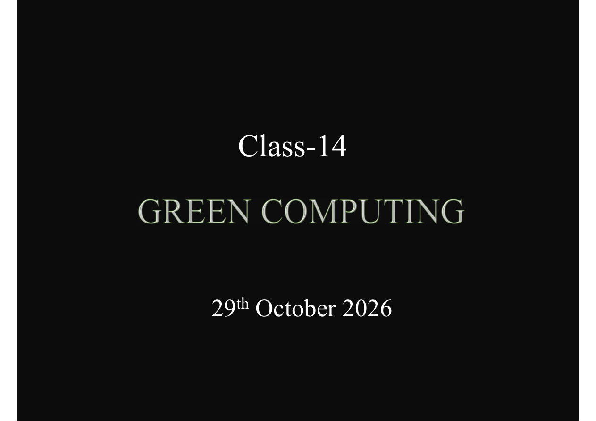
Green Computing and Sustainable ICT Architecture
- •29th October 2026 Class-14
Green Computing and Sustainable ICT Architecture: 29th October 2026 Class-14. This material establishes quantitative limits, operational trade-offs, and core exam principles for Lecture 14.
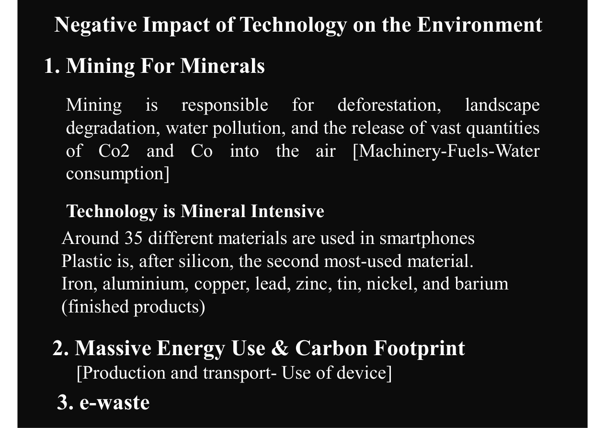
Negative Impact of Technology on the Environment
- •Negative Impact of Technology on the Environment 1. Mining For Minerals Mining responsible
Negative Impact of Technology on the Environment: Negative Impact of Technology on the Environment 1. Mining For Minerals Mining responsible. This material establishes quantitative limits, operational trade-offs, and core exam principles for Lecture 14.
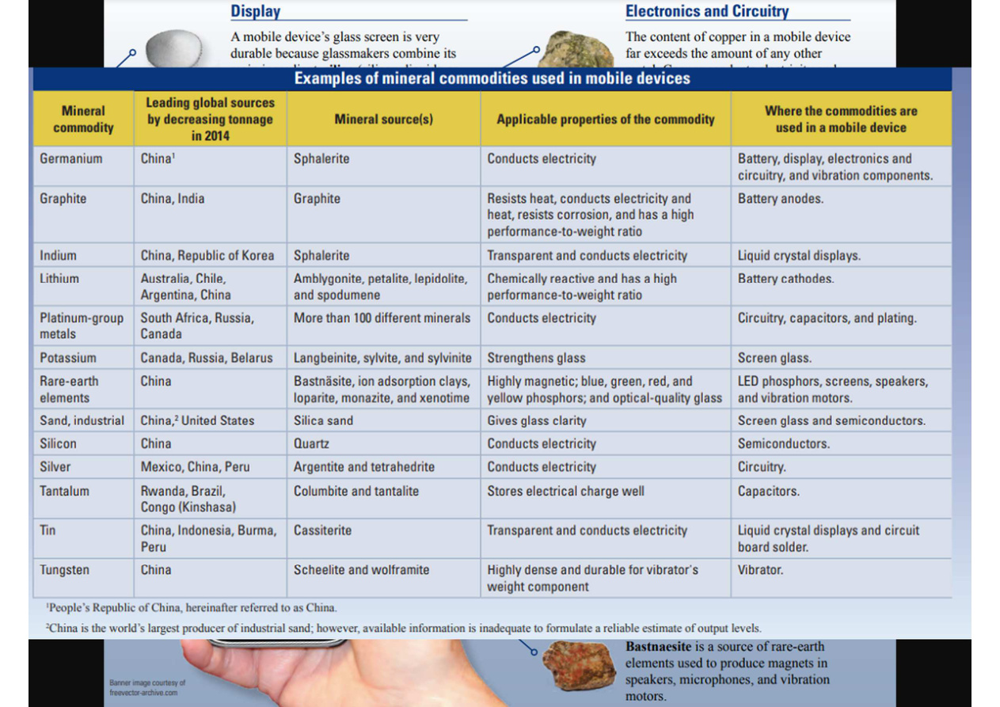
Semiconductor Supply Chain and Conflict Mineral Extraction
Visual figure slide. See the high-resolution render on the left.
Semiconductor Supply Chain and Conflict Mineral Extraction illustrates key empirical observations and visual relationships in Lecture 14. It provides field data, case evidence, or system diagrams that support the quantitative and regulatory concepts taught in this topic.
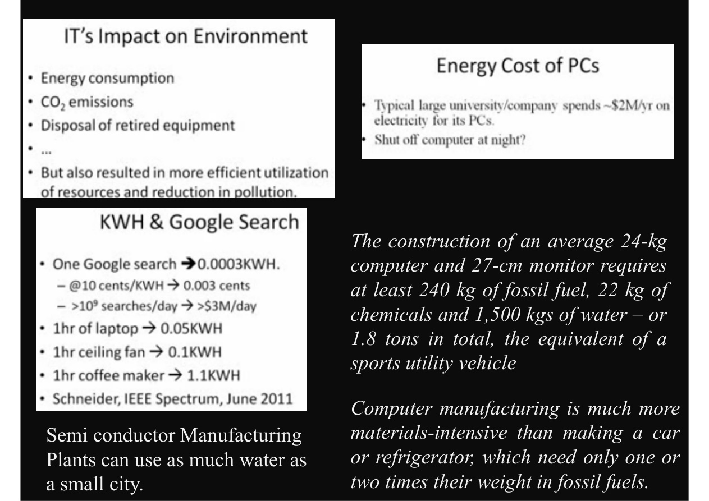
The construction of an average 24-kg
- •The construction of an average 24-kg computer and 27-cm monitor requires at least 240 kg of fossil fuel, 22 kg of chemicals and 1,500 kgs of water – or
Manufacturing a typical 24-kg desktop computer and CRT monitor consumes 240 kg of fossil fuels, 22 kg of chemicals, and 1,500 kg of water. Unlike conventional heavy machinery where the product weight exceeds the manufacturing inputs, semiconductors and computer hardware have an inverted 10:1 material footprint ratio. Over 80% of an electronic device's lifecycle energy is embodied in manufacturing rather than operational use.
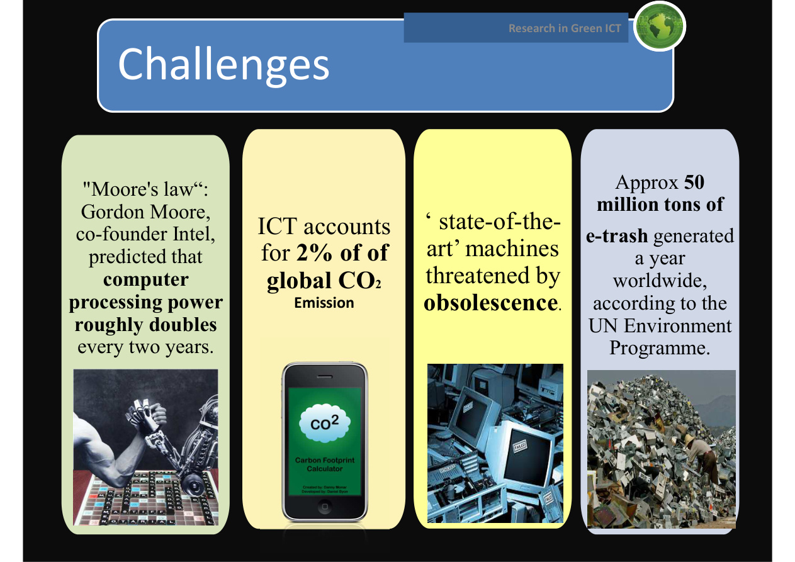
Challenges
- •Challenges Research in Green ICT "Moore's law“: Gordon Moore,
Moore's Law observed that transistor density on integrated circuits doubles approximately every 18 to 24 months. While this drove exponential gains in compute speed, it shortened hardware replacement cycles to 2–3 years. Rapid obsolescence accelerates conflict mineral extraction and generates millions of tons of hazardous electronic waste annually.
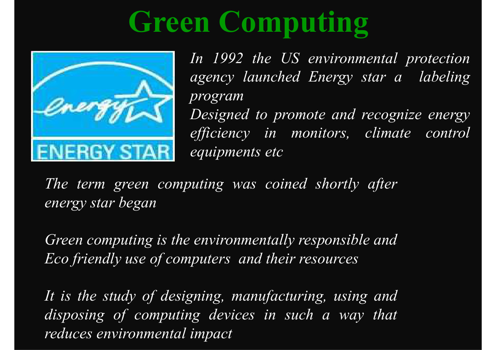
Green Computing
- •Green Computing The term green computing was coined shortly after energy star began Green computing is the environmentally responsible and
Green Computing: Green Computing The term green computing was coined shortly after energy star began Green computing is the environmentally responsible and. This material establishes quantitative limits, operational trade-offs, and core exam principles for Lecture 14.
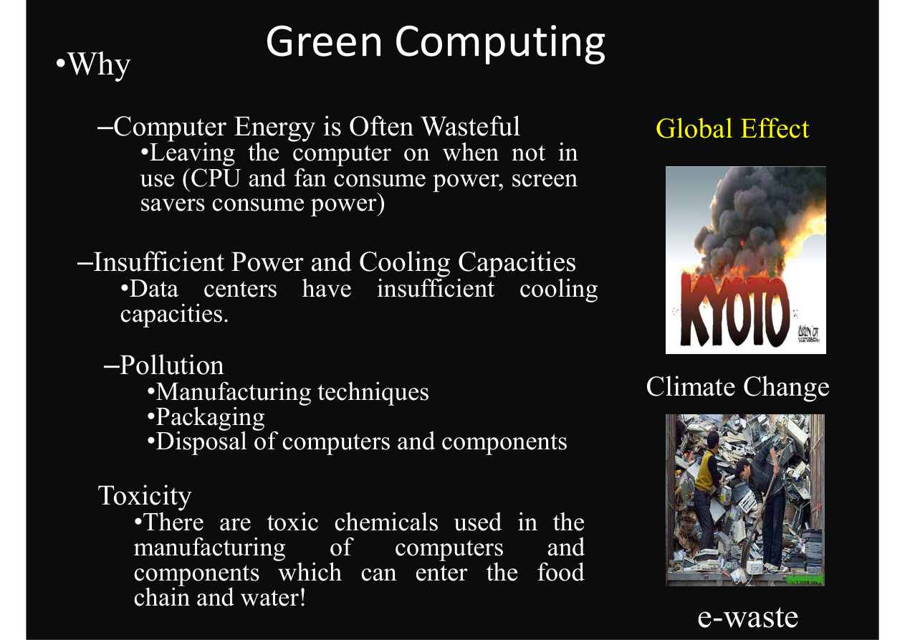
Green Computing
- •Green Computing Toxicity •There are toxic chemicals used in the manufacturing
Green Computing: Green Computing Toxicity •There are toxic chemicals used in the manufacturing. This material establishes quantitative limits, operational trade-offs, and core exam principles for Lecture 14.
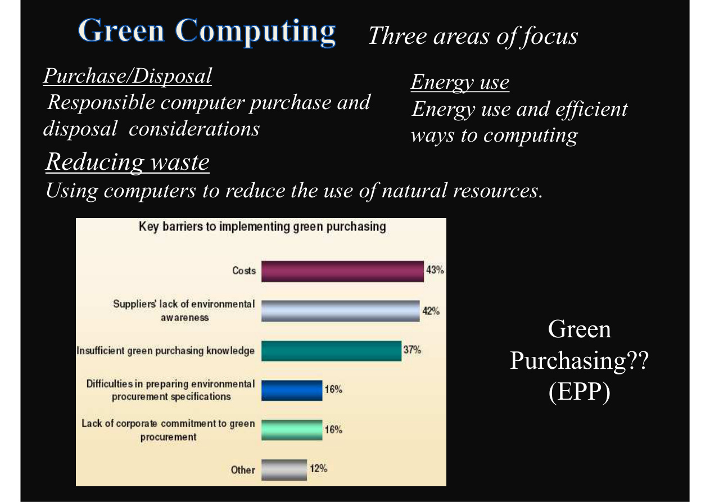
Reducing waste
- •Reducing waste Using computers to reduce the use of natural resources. Purchase/Disposal Responsible computer purchase and
Reducing waste: Reducing waste Using computers to reduce the use of natural resources. Purchase/Disposal Responsible computer purchase and. This material establishes quantitative limits, operational trade-offs, and core exam principles for Lecture 14.
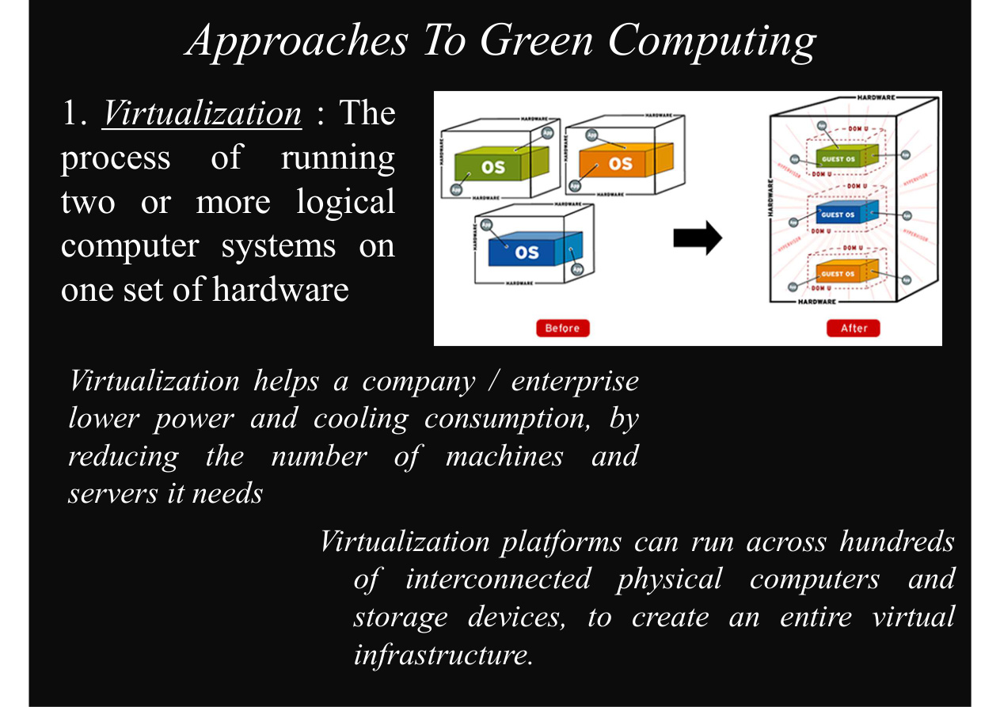
Approaches To Green Computing
- •Approaches To Green Computing 1. Virtualization : The process running
Approaches To Green Computing: Approaches To Green Computing 1. Virtualization : The process running. This material establishes quantitative limits, operational trade-offs, and core exam principles for Lecture 14.
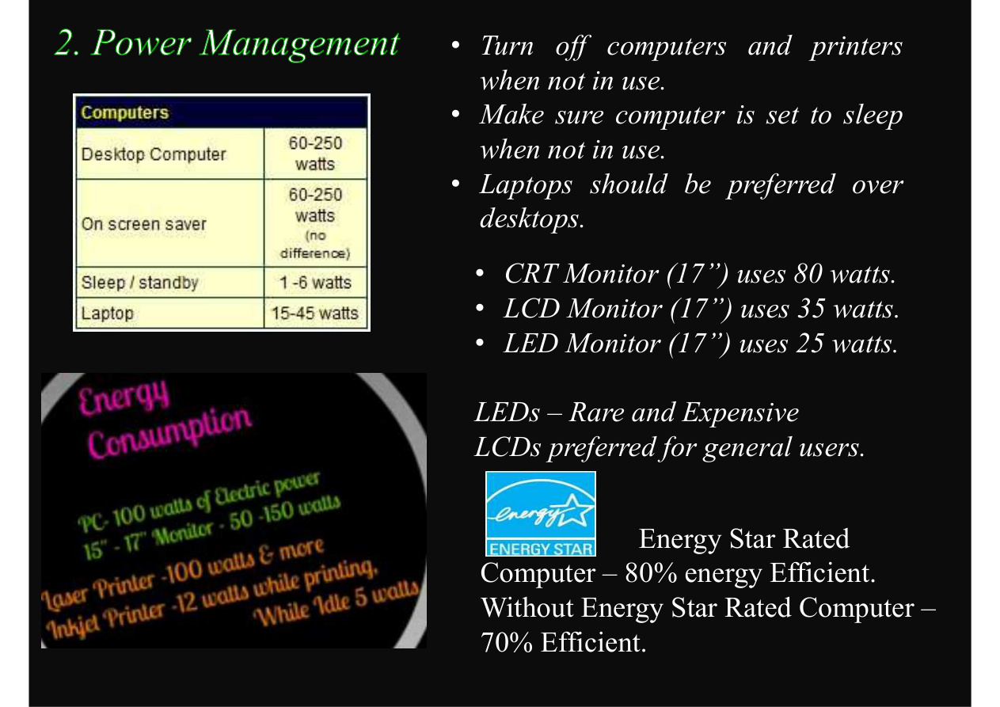
• Turn off computers and printers
- •• Turn off computers and printers when not in use. • Make sure computer is set to sleep when not in use.
• Turn off computers and printers: • Turn off computers and printers when not in use. • Make sure computer is set to sleep when not in use. This material establishes quantitative limits, operational trade-offs, and core exam principles for Lecture 14.
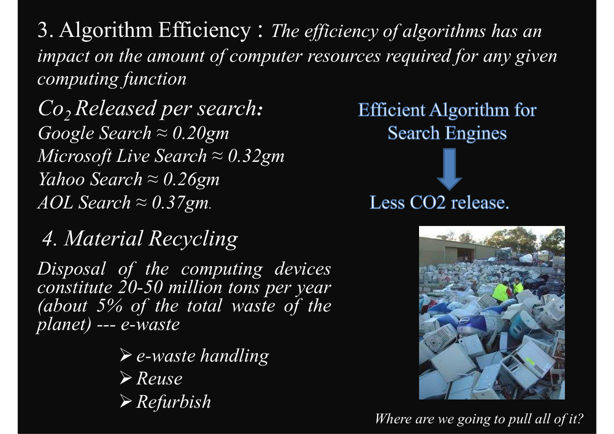
3. Algorithm Efficiency : The efficiency of algorithms has an
- •3. Algorithm Efficiency : The efficiency of algorithms has an impact on the amount of computer resources required for any given computing function Co2 Released per search:
3. Algorithm Efficiency : The efficiency of algorithms has an: 3. Algorithm Efficiency : The efficiency of algorithms has an impact on the amount of computer resources required for any given computing function Co2 Released per search:. This material establishes quantitative limits, operational trade-offs, and core exam principles for Lecture 14.
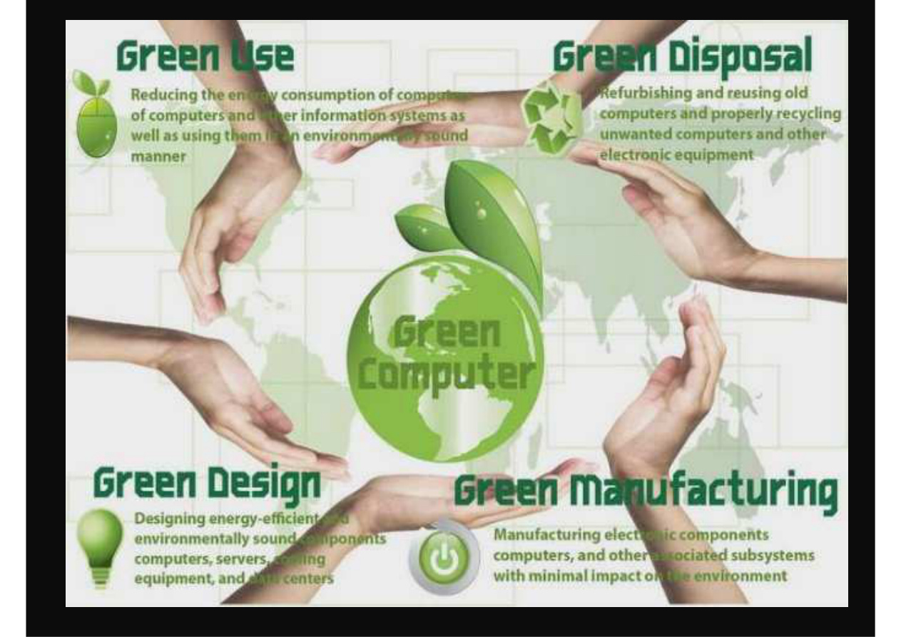
Slide 12
Visual figure slide. See the high-resolution render on the left.
Lecture 14 figure 12 illustrates key empirical observations and visual relationships in Lecture 14. It provides field data, case evidence, or system diagrams that support the quantitative and regulatory concepts taught in this topic.
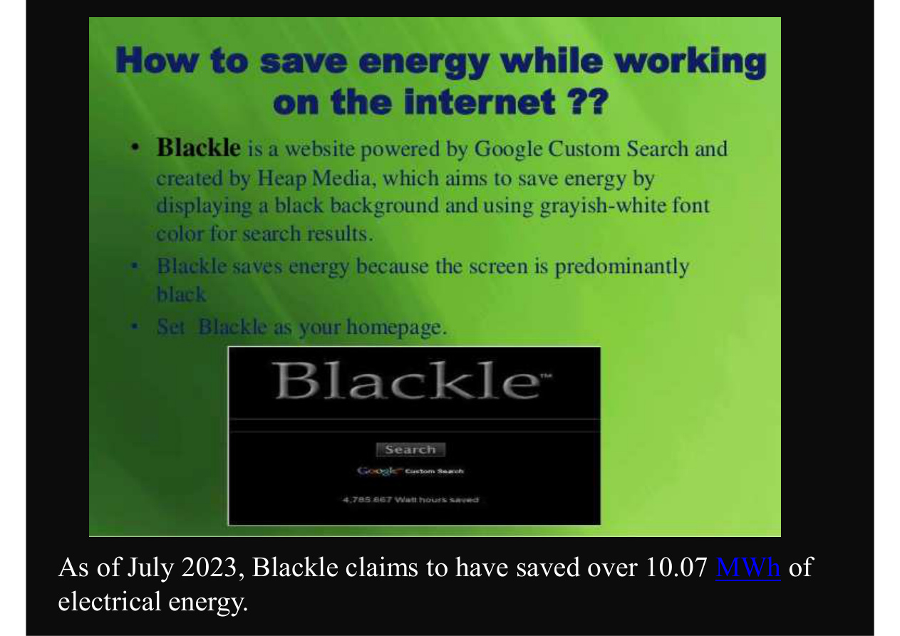
As of July 2023, Blackle claims to have saved over 10.07 MWh of
- •As of July 2023, Blackle claims to have saved over 10.07 MWh of electrical energy.
As of July 2023, Blackle claims to have saved over 10.07 MWh of: As of July 2023, Blackle claims to have saved over 10.07 MWh of electrical energy. This material establishes quantitative limits, operational trade-offs, and core exam principles for Lecture 14.
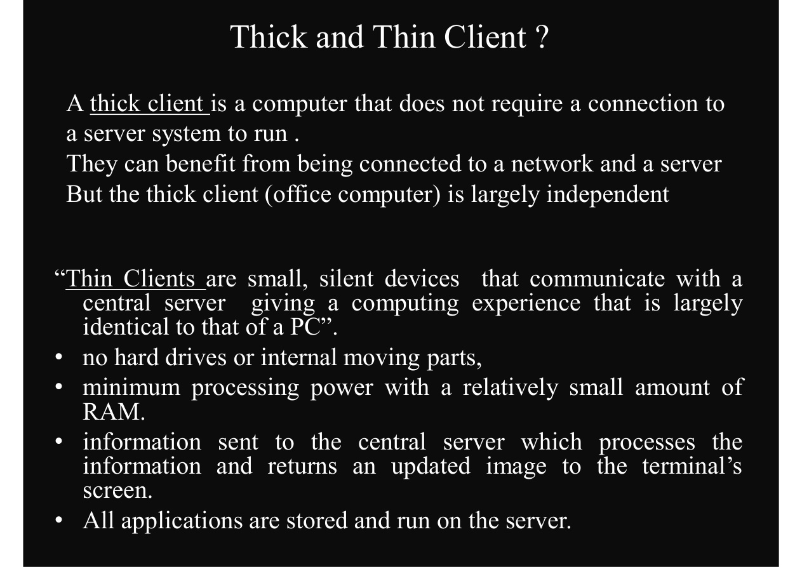
Thick and Thin Client ?
- •Thick and Thin Client ? “Thin Clients are small, silent devices that communicate with a central server
Traditional thick clients run local CPUs and storage with 150–250W power draws. Thin clients use compact solid-state hardware drawing only 10–20W, offloading computation to centralized servers. Thin clients last 6–8 years compared to 3–4 years for desktop PCs, cut workstation acquisition costs by roughly 50%, and reduce physical e-waste volume.
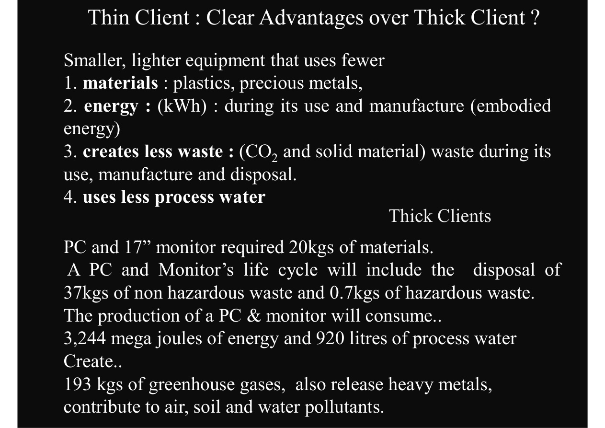
Smaller, lighter equipment that uses fewer
- •Smaller, lighter equipment that uses fewer 1. materials : plastics, precious metals, 2. energy : (kWh) : during its use and manufacture (embodied energy)
Smaller, lighter equipment that uses fewer: Smaller, lighter equipment that uses fewer 1. materials : plastics, precious metals, 2. energy : (kWh) : during its use and manufacture (embodied energy). This material establishes quantitative limits, operational trade-offs, and core exam principles for Lecture 14.
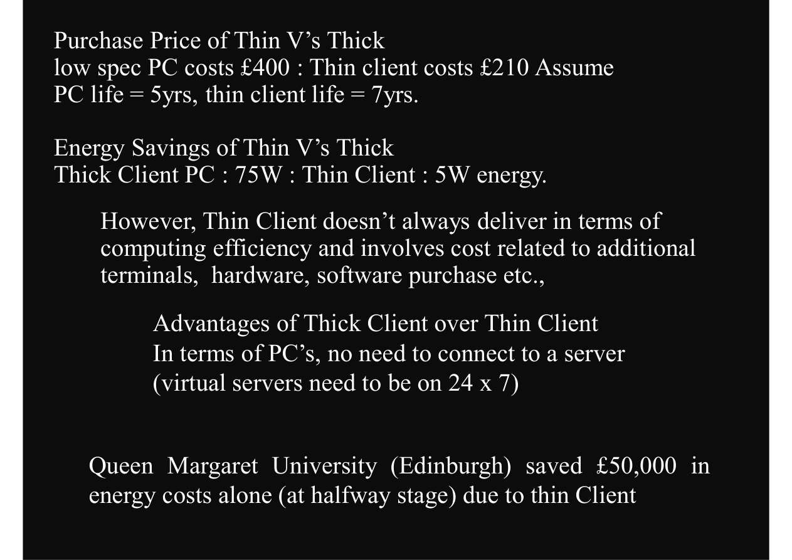
Purchase Price of Thin V’s Thick
- •Purchase Price of Thin V’s Thick low spec PC costs £400 : Thin client costs £210 Assume PC life = 5yrs, thin client life = 7yrs. Energy Savings of Thin V’s Thick
Traditional thick clients run local CPUs and storage with 150–250W power draws. Thin clients use compact solid-state hardware drawing only 10–20W, offloading computation to centralized servers. Thin clients last 6–8 years compared to 3–4 years for desktop PCs, cut workstation acquisition costs by roughly 50%, and reduce physical e-waste volume.
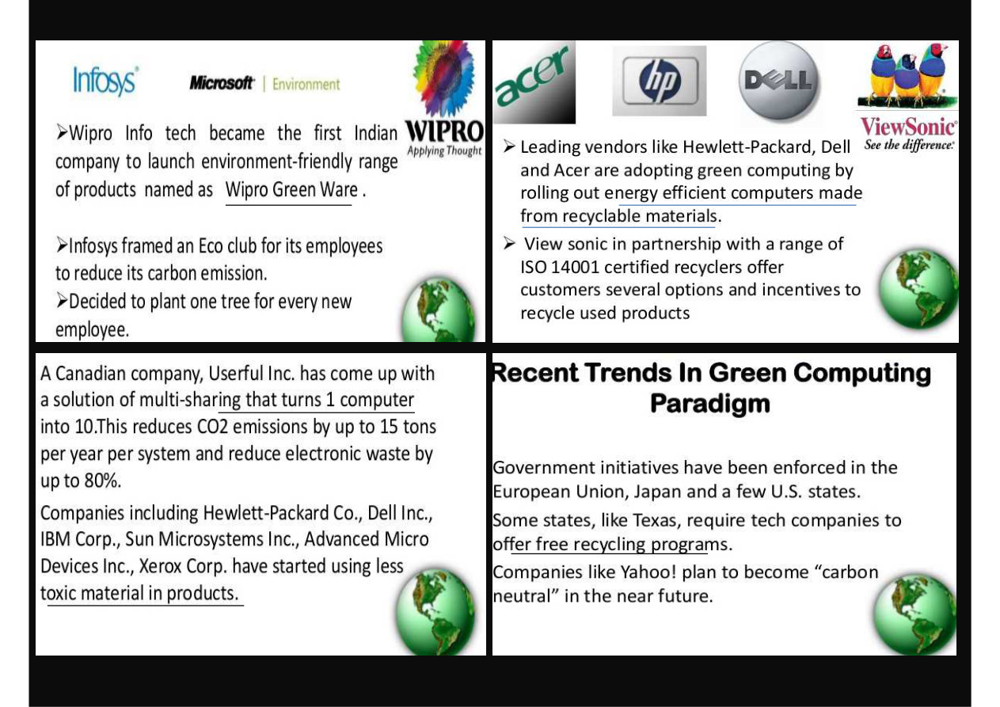
Slide 17
Visual figure slide. See the high-resolution render on the left.
Lecture 14 figure 17 illustrates key empirical observations and visual relationships in Lecture 14. It provides field data, case evidence, or system diagrams that support the quantitative and regulatory concepts taught in this topic.
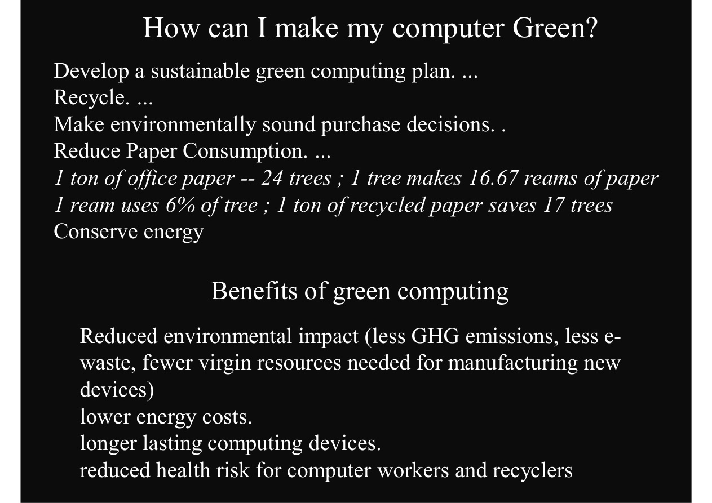
How can I make my computer Green?
- •How can I make my computer Green? Develop a sustainable green computing plan. ... Recycle. ... Make environmentally sound purchase decisions. .
How can I make my computer Green?: How can I make my computer Green? Develop a sustainable green computing plan. ... Recycle. ... Make environmentally sound purchase decisions. . This material establishes quantitative limits, operational trade-offs, and core exam principles for Lecture 14.
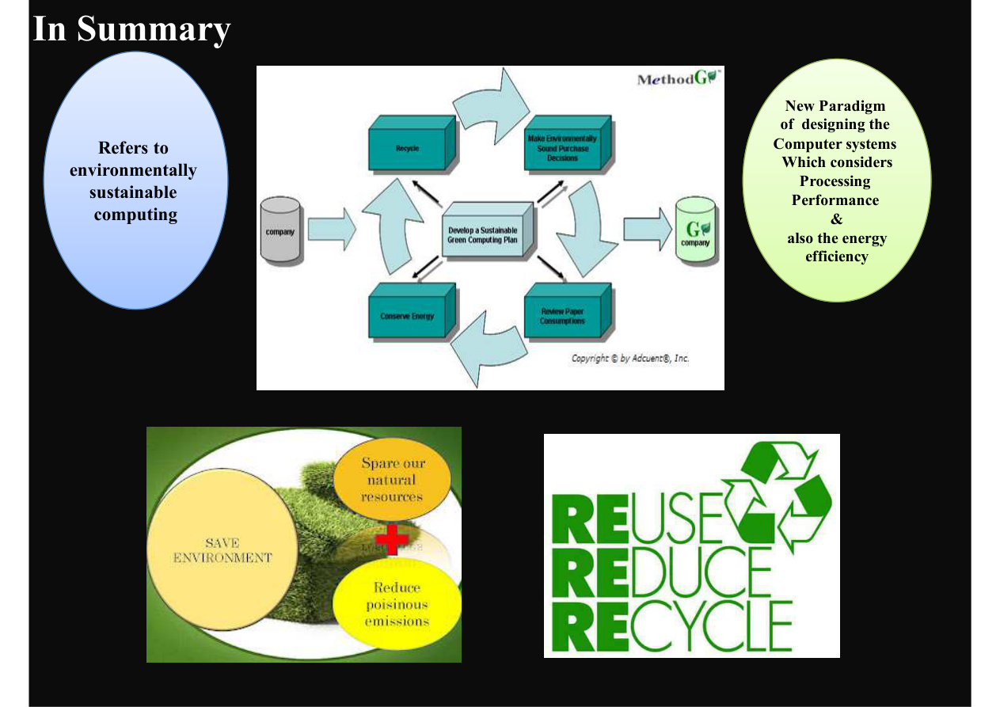
Refers to
- •Refers to environmentally sustainable computing
Refers to: Refers to environmentally sustainable computing. This material establishes quantitative limits, operational trade-offs, and core exam principles for Lecture 14.
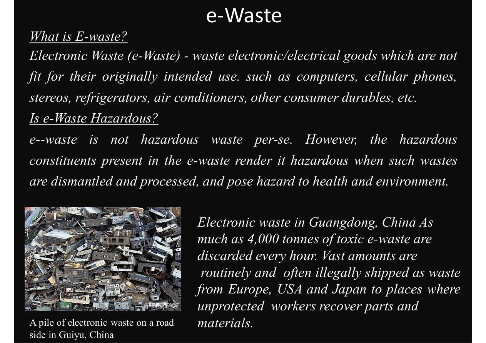
What is E-waste?
- •What is E-waste? Electronic Waste (e-Waste) - waste electronic/electrical goods which are not fit for their originally intended use. such as computers, cellular phones, stereos, refrigerators, air conditioners, other consumer durables, etc.
Electronic waste (e-waste) covers obsolete, broken, or end-of-life electrical equipment. E-waste is the fastest-growing solid waste stream globally, exceeding 50 million metric tons annually. It concentrates hazardous substances including lead in CRT glass, cadmium in contacts, mercury in backlights, and brominated flame retardants in plastics, which are regulated internationally under the Basel Convention.
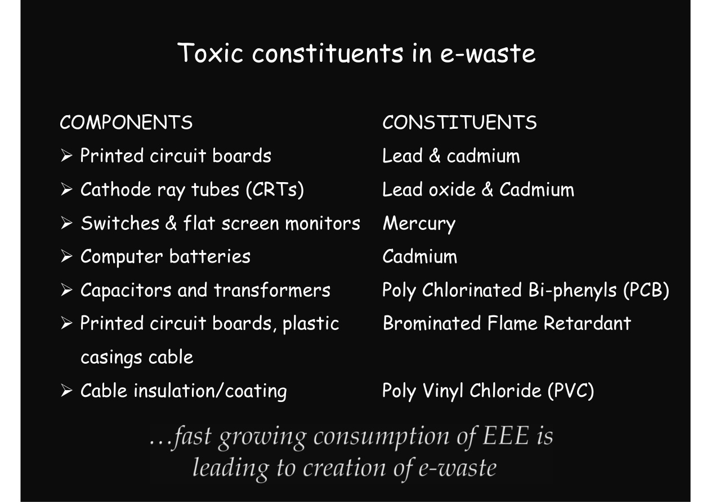
COMPONENTS
- •COMPONENTS CONSTITUENTS Printed circuit boards Lead & cadmium
COMPONENTS: COMPONENTS CONSTITUENTS Printed circuit boards Lead & cadmium. This material establishes quantitative limits, operational trade-offs, and core exam principles for Lecture 14.
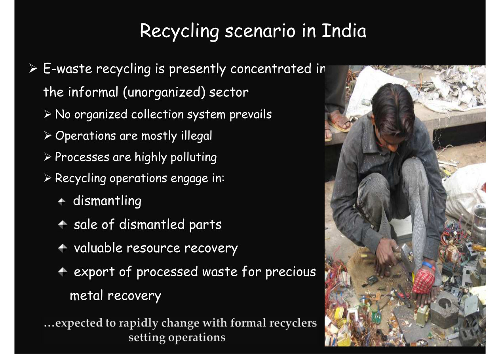
E-waste recycling is presently concentrated in
- •E-waste recycling is presently concentrated in the informal (unorganized) sector No organized collection system prevails Operations are mostly illegal
Electronic waste (e-waste) covers obsolete, broken, or end-of-life electrical equipment. E-waste is the fastest-growing solid waste stream globally, exceeding 50 million metric tons annually. It concentrates hazardous substances including lead in CRT glass, cadmium in contacts, mercury in backlights, and brominated flame retardants in plastics, which are regulated internationally under the Basel Convention.
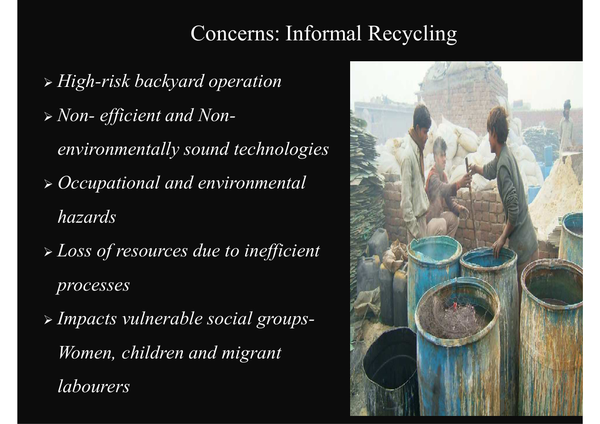
Concerns: Informal Recycling
- •Concerns: Informal Recycling High-risk backyard operation Non- efficient and Non- environmentally sound technologies
Concerns: Informal Recycling: Concerns: Informal Recycling High-risk backyard operation Non- efficient and Non- environmentally sound technologies. This material establishes quantitative limits, operational trade-offs, and core exam principles for Lecture 14.
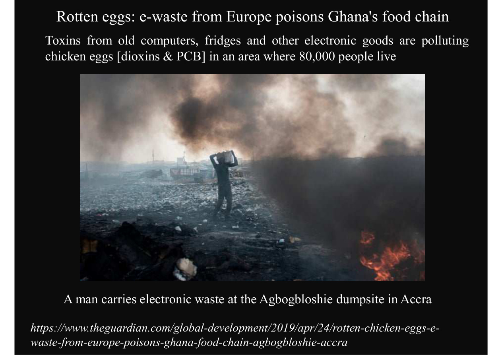
Rotten eggs: e-waste from Europe poisons Ghana's food chain
- •Rotten eggs: e-waste from Europe poisons Ghana's food chain Toxins from old computers, fridges and other electronic goods are polluting chicken eggs [dioxins & PCB] in an area where 80,000 people live A man carries electronic waste at the Agbogbloshie dumpsite in Accra
Electronic waste (e-waste) covers obsolete, broken, or end-of-life electrical equipment. E-waste is the fastest-growing solid waste stream globally, exceeding 50 million metric tons annually. It concentrates hazardous substances including lead in CRT glass, cadmium in contacts, mercury in backlights, and brominated flame retardants in plastics, which are regulated internationally under the Basel Convention.
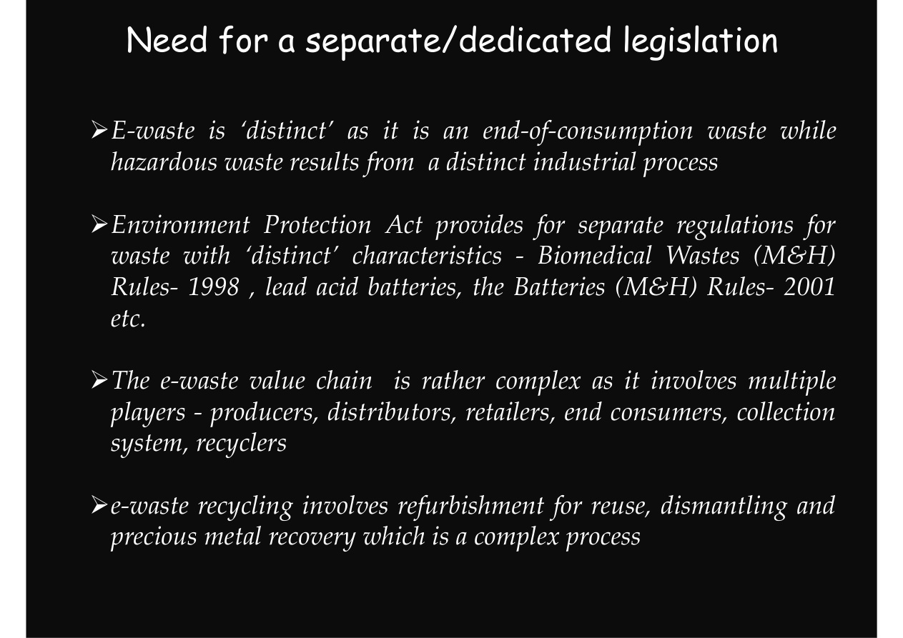
E-waste is ‘distinct’ as it is an end-of-consumption waste while
- •E-waste is ‘distinct’ as it is an end-of-consumption waste while hazardous waste results from a distinct industrial process Environment Protection Act provides for separate regulations for waste with ‘distinct’ characteristics - Biomedical Wastes (M&H)
Electronic waste (e-waste) covers obsolete, broken, or end-of-life electrical equipment. E-waste is the fastest-growing solid waste stream globally, exceeding 50 million metric tons annually. It concentrates hazardous substances including lead in CRT glass, cadmium in contacts, mercury in backlights, and brominated flame retardants in plastics, which are regulated internationally under the Basel Convention.
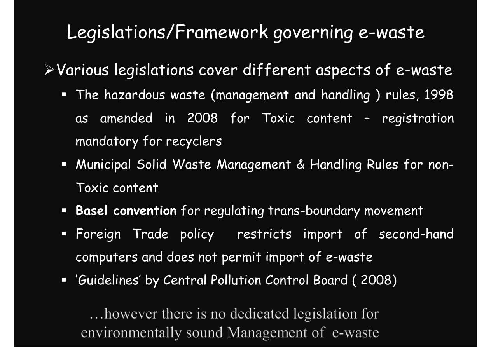
Various legislations cover different aspects of e-waste
- •Various legislations cover different aspects of e-waste The hazardous waste (management and handling ) rules, 1998 amended 2008
Electronic waste (e-waste) covers obsolete, broken, or end-of-life electrical equipment. E-waste is the fastest-growing solid waste stream globally, exceeding 50 million metric tons annually. It concentrates hazardous substances including lead in CRT glass, cadmium in contacts, mercury in backlights, and brominated flame retardants in plastics, which are regulated internationally under the Basel Convention.
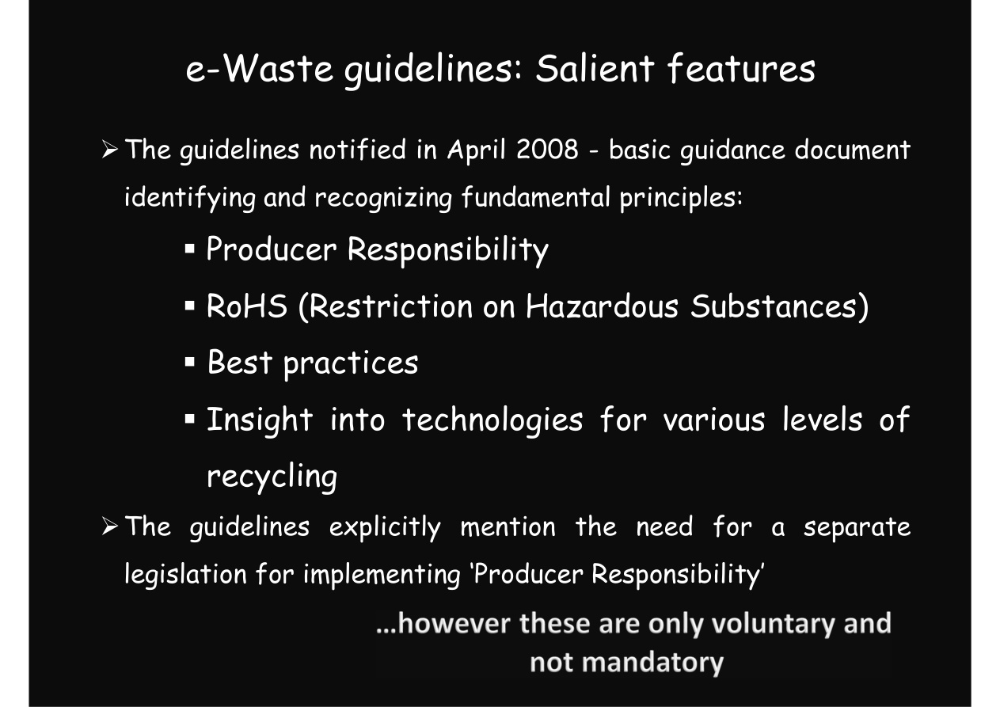
The guidelines notified in April 2008 - basic guidance document
- •The guidelines notified in April 2008 - basic guidance document identifying and recognizing fundamental principles: Producer Responsibility RoHS (Restriction on Hazardous Substances)
The guidelines notified in April 2008 - basic guidance document: The guidelines notified in April 2008 - basic guidance document identifying and recognizing fundamental principles: Producer Responsibility RoHS (Restriction on Hazardous Substances). This material establishes quantitative limits, operational trade-offs, and core exam principles for Lecture 14.
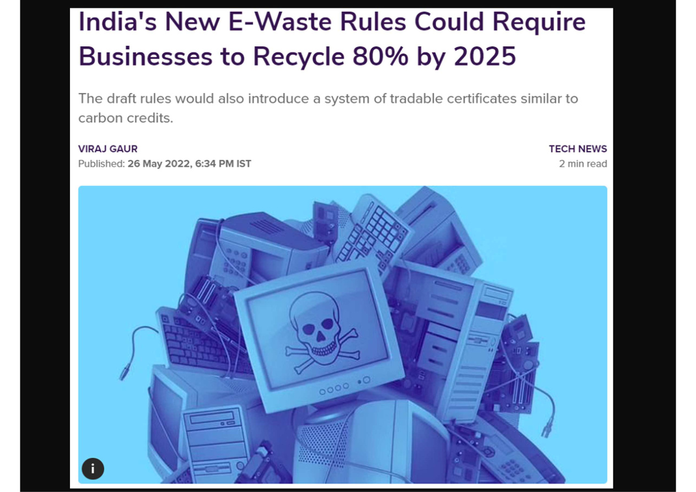
Slide 28
Visual figure slide. See the high-resolution render on the left.
Lecture 14 figure 28 illustrates key empirical observations and visual relationships in Lecture 14. It provides field data, case evidence, or system diagrams that support the quantitative and regulatory concepts taught in this topic.
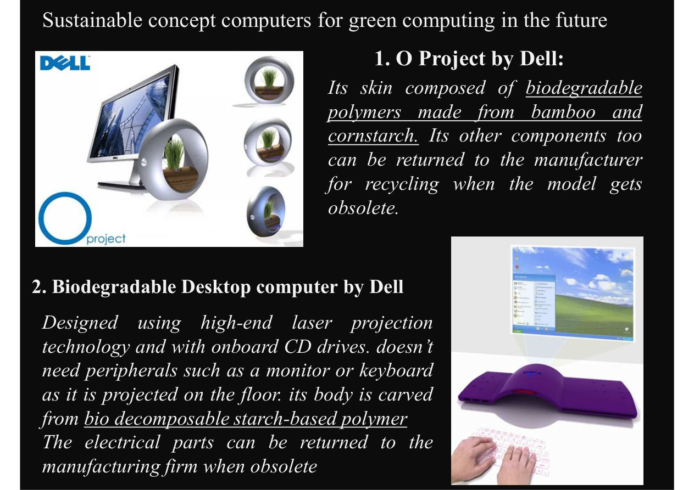
Sustainable concept computers for green computing in the future
- •Sustainable concept computers for green computing in the future Its skin composed of biodegradable polymers made
Sustainable concept computers for green computing in the future: Sustainable concept computers for green computing in the future Its skin composed of biodegradable polymers made. This material establishes quantitative limits, operational trade-offs, and core exam principles for Lecture 14.
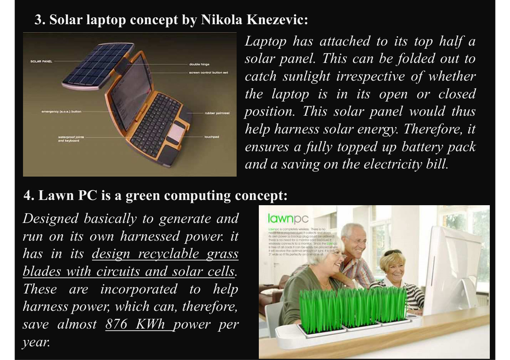
3. Solar laptop concept by Nikola Knezevic:
- •3. Solar laptop concept by Nikola Knezevic: Laptop has attached to its top half a solar panel. This can be folded out to catch sunlight irrespective of whether
3. Solar laptop concept by Nikola Knezevic:: 3. Solar laptop concept by Nikola Knezevic: Laptop has attached to its top half a solar panel. This can be folded out to catch sunlight irrespective of whether. This material establishes quantitative limits, operational trade-offs, and core exam principles for Lecture 14.
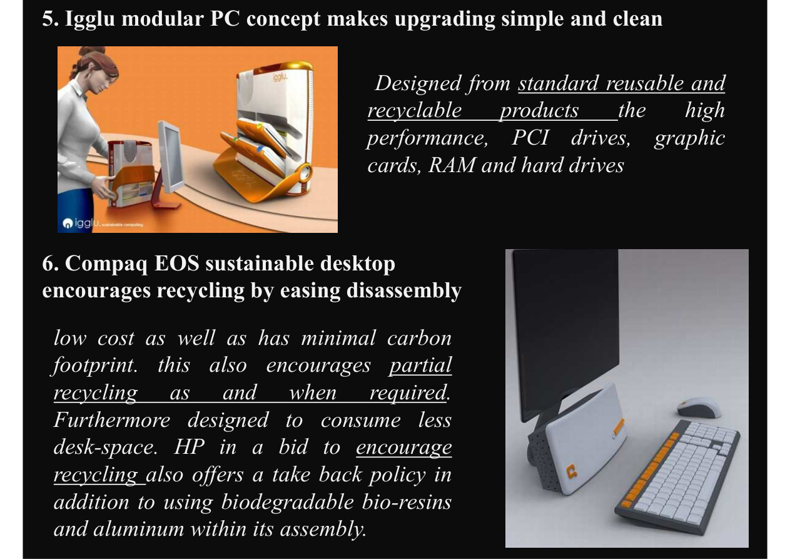
5. Igglu modular PC concept makes upgrading simple and clean
- •5. Igglu modular PC concept makes upgrading simple and clean Designed from standard reusable and recyclable products
5. Igglu modular PC concept makes upgrading simple and clean: 5. Igglu modular PC concept makes upgrading simple and clean Designed from standard reusable and recyclable products. This material establishes quantitative limits, operational trade-offs, and core exam principles for Lecture 14.
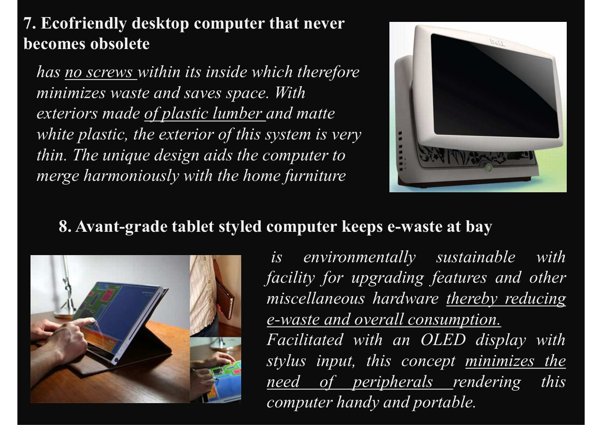
7. Ecofriendly desktop computer that never
- •7. Ecofriendly desktop computer that never becomes obsolete has no screws within its inside which therefore minimizes waste and saves space. With
7. Ecofriendly desktop computer that never: 7. Ecofriendly desktop computer that never becomes obsolete has no screws within its inside which therefore minimizes waste and saves space. With. This material establishes quantitative limits, operational trade-offs, and core exam principles for Lecture 14.
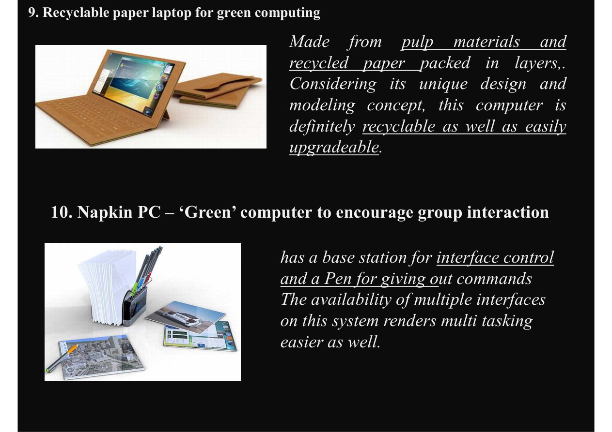
9. Recyclable paper laptop for green computing
- •9. Recyclable paper laptop for green computing Made from pulp
9. Recyclable paper laptop for green computing: 9. Recyclable paper laptop for green computing Made from pulp. This material establishes quantitative limits, operational trade-offs, and core exam principles for Lecture 14.
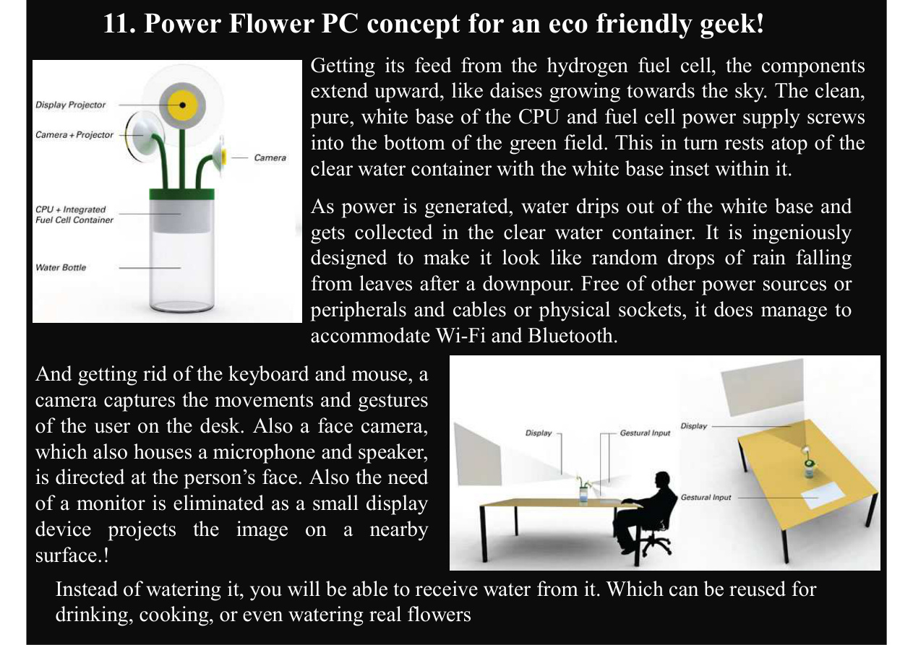
11. Power Flower PC concept for an eco friendly geek!
- •11. Power Flower PC concept for an eco friendly geek! Getting its feed from the hydrogen fuel cell, the components extend upward, like daises growing towards the sky. The clean, pure, white base of the CPU and fuel cell power supply screws
11. Power Flower PC concept for an eco friendly geek!: 11. Power Flower PC concept for an eco friendly geek! Getting its feed from the hydrogen fuel cell, the components extend upward, like daises growing towards the sky. The clean, pure, white base of the CPU and fuel cell power supply screws. This material establishes quantitative limits, operational trade-offs, and core exam principles for Lecture 14.
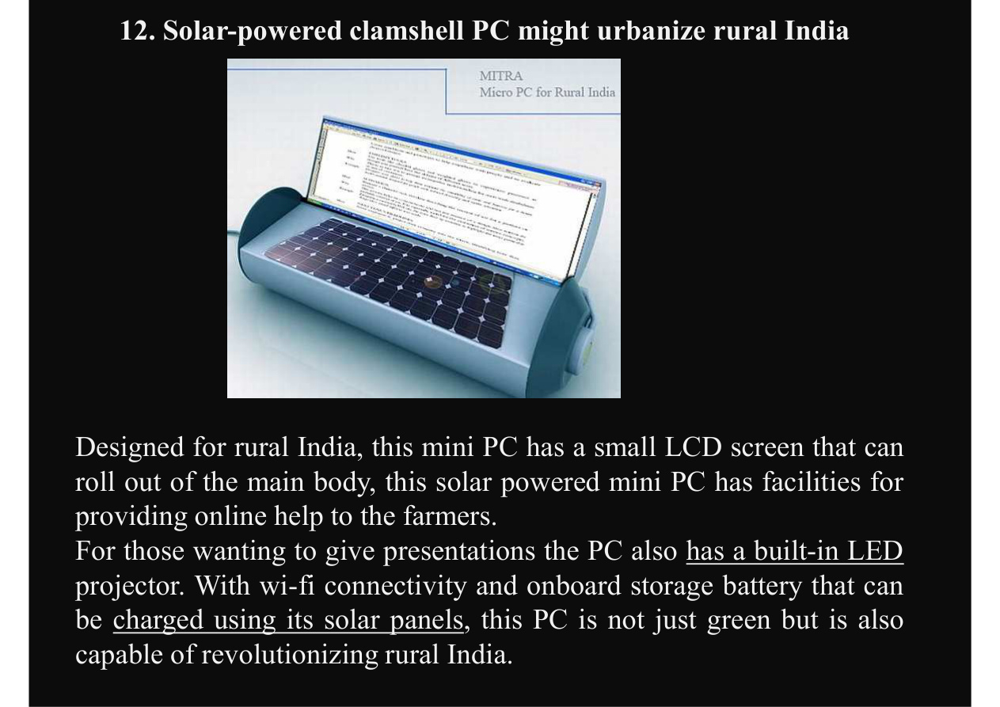
12. Solar-powered clamshell PC might urbanize rural India
- •12. Solar-powered clamshell PC might urbanize rural India Designed for rural India, this mini PC has a small LCD screen that can roll out of the main body, this solar powered mini PC has facilities for providing online help to the farmers.
12. Solar-powered clamshell PC might urbanize rural India: 12. Solar-powered clamshell PC might urbanize rural India Designed for rural India, this mini PC has a small LCD screen that can roll out of the main body, this solar powered mini PC has facilities for providing online help to the farmers. This material establishes quantitative limits, operational trade-offs, and core exam principles for Lecture 14.
Green Datacenter PUE & Server Virtualization Calculator
Model energy efficiency and carbon emissions in datacenter infrastructure. Adjust physical server count, virtualization consolidation ratio, and cooling methodology to observe Power Usage Effectiveness (PUE), annual energy bills, and avoided $CO_2e$.
Active recall flashcards
Review definitions, reactions, and governing laws from the lecture slides before flipping.
Exam traps and common pitfalls
Common student misconceptions and subtle distinctions tested in exams.
- Exam trap: Assuming operational power is the largest component of a laptop's carbon footprint. Over 70% of a laptop's lifetime carbon footprint is embodied during manufacturing, making device longevity the #1 green priority.
- Exam trap: Confusing low PUE with low overall energy consumption. An inefficient datacenter running wasteful algorithms can still achieve a low PUE if its cooling overhead is low. True efficiency requires algorithmic efficiency combined with low PUE.
Concept check quiz
Verify your understanding of core concepts from this lecture deck.
Slide reference gallery
Complete visual reference of all 35 slides with direct links to original presentation files.